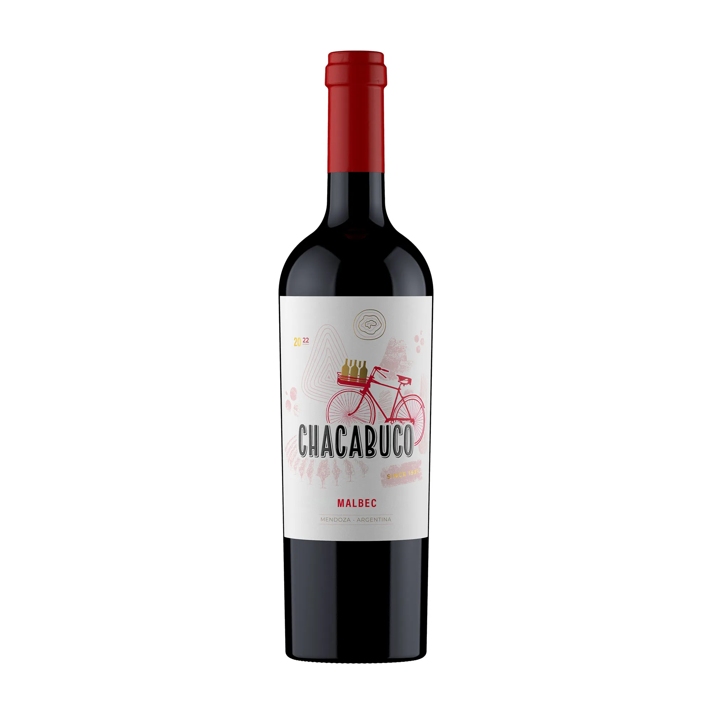
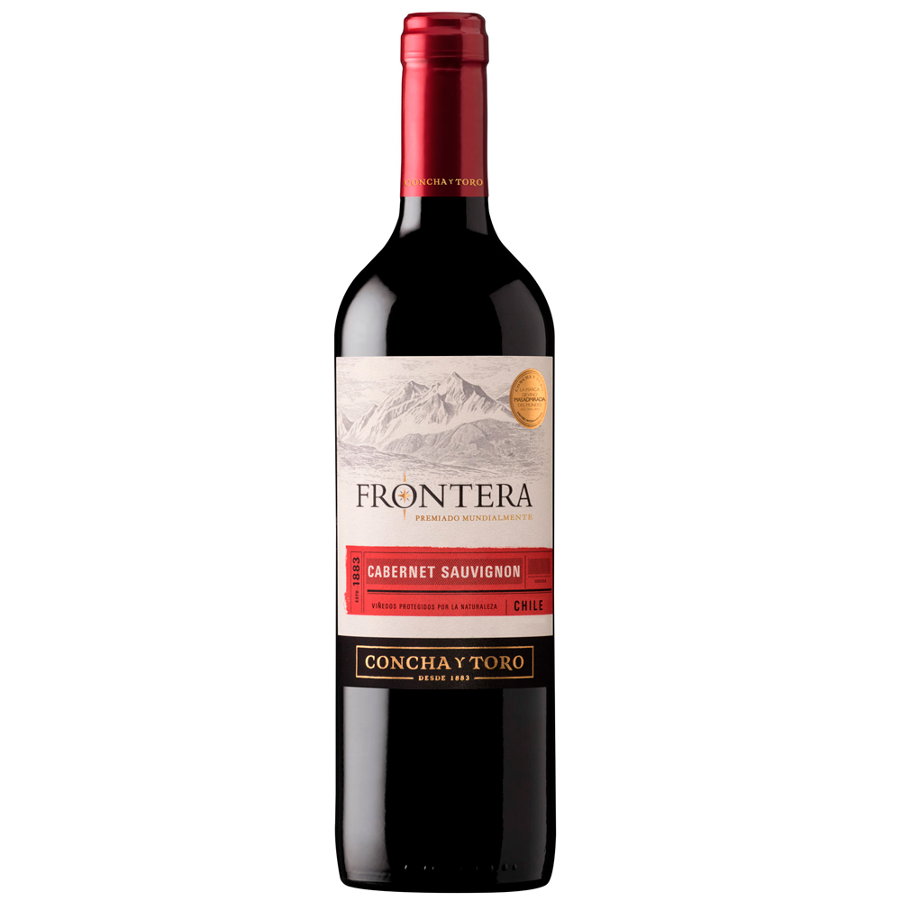
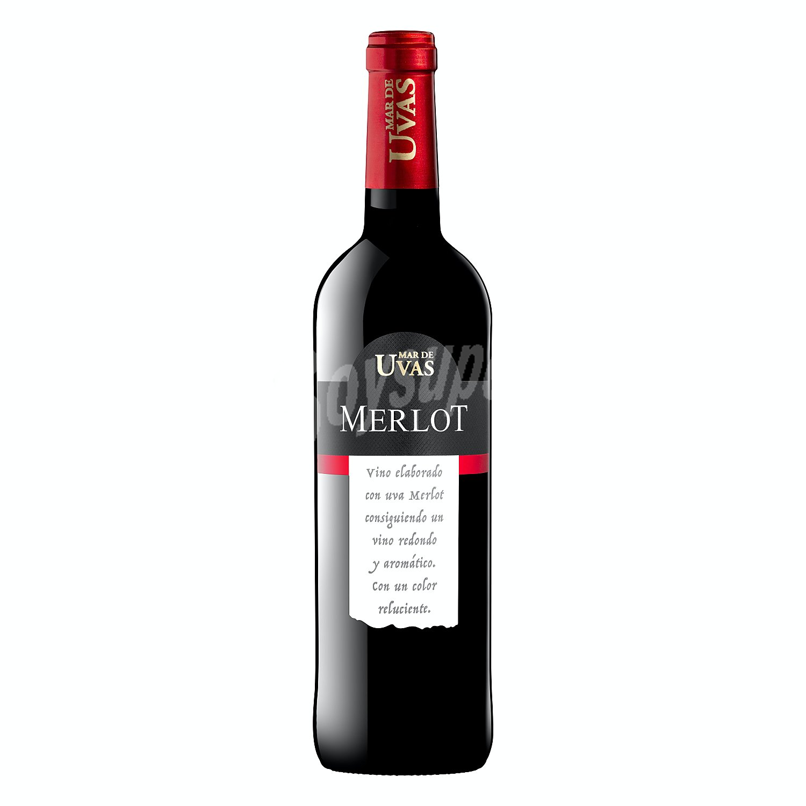

Malbec
Malbec: vino tinto suave, con aroma a ciruela y frutos rojos, muy fácil de tomar y clásico argentino.

Cabernet
Cabernet Sauvignon: Vino tinto más intenso y estructurado, con notas de pimiento, frutos negros y un toque de madera. Tiene taninos firmes y un final largo. Ideal para carnes rojas y sabores fuertes.

Merlot
Merlot: Vino tinto suave y redondo, con notas de cereza y ciruela. Es fácil de beber, menos intenso que el Cabernet y muy versátil para acompañar comidas livianas o pastas.